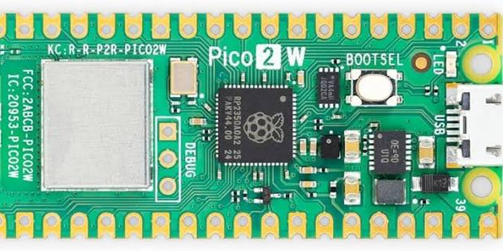
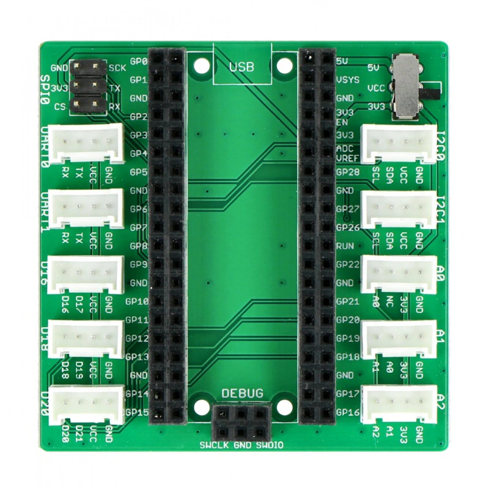

Raspberry Pi Pico 2 W
The Raspberry Pi Pico 2 W pairs the RP2350's Cortex-M33 with an Infineon CYW43439 Wi-Fi radio. The UNO Q is a
Cortex-M33 too, so Juno compiles for the Pico with the same Thumb-2 backend, linking against Earle Philhower's
arduino-pico core (rp2040:rp2040:rpipico2w:ipbtstack=ipv4btcble).

Core specification
| Characteristic | Raspberry Pi Pico 2 W |
|---|---|
| Microcontroller | RP2350A |
| CPU architecture | Dual-core 32-bit Cortex-M33F |
| CPU clock | 150 MHz |
| Program flash | 4 MB |
| SRAM | 520 kB |
| Logic and operating voltage | 3.3 V |
| Wi-Fi/Bluetooth radio | Infineon CYW43439 |
| Built-in LED | CYW43439 radio chip (core pin 64) |
| Arduino CLI FQBN | rp2040:rp2040:rpipico2w:ipbtstack=ipv4btcble |
| Juno board id | raspberry-pi-pico-2-w |
What Juno supports
| Feature | Status | Notes | Example |
|---|---|---|---|
Gpio, DigitalOutput |
✓ | Resolve A0–A2, GP* and GPIO* names. A0–A2 map to ADC pins GP26–GP28; the built-in LED is routed by the core through pin 64. |
RaspberryPico2Blink |
Delay, Serial |
✓ | Serial output uses the board's USB serial connection. | RaspberryPico2WifiStatus |
int, long, float, double |
✓ | Java primitive semantics, including double-precision arithmetic. | |
Double-precision java.lang.Math |
✓ | Supported by the RP2350 Thumb-2 toolchain. | |
| Objects, arrays, static and interface calls | ✓ | ||
| Lambdas and method references | ✓ | ||
BigInteger, BigDecimal, MathContext |
✓ | Runs in the board's fixed arena with the JDK's rounding and text rules. | |
Threads, synchronized, ReentrantLock, StructuredTaskScope, ScopedValue |
✓ | Uses Juno's non-FreeRTOS Thumb-2 scheduler. The arduino-pico BLE library is not compatible with its FreeRTOS menu. | |
@Watchdog |
✓ | Uses the RP2350 watchdog runtime. | |
UUID.randomUUID() |
— | No cryptographic random source is exposed for this board. | |
| Wi-Fi station | ✓ | MCU.getWifi() provides station mode, status, addresses and TCP/UDP networking. |
RaspberryPico2WifiStatus |
| Wi-Fi access point | ✓ | beginAP(ssid, password). |
|
Udp, SNTP (LocalDateTime.now()) |
✓ | Uses the CYW43439 Wi-Fi radio and the core's UDP support. | |
HttpClient (HTTP) |
✓ | Plain HTTP client support through the board's Wi-Fi runtime. | |
HttpClient.requestHttps |
✓ | HTTPS client support through the Pico TLS transport. | |
HttpServer |
✓ | HTTP and HTTPS server support through the board's Wi-Fi runtime. | |
Smtp.sendTls, Pop3Client |
✓ | Implicit TLS email support. | |
Smtp.send (STARTTLS) |
— | STARTTLS is not available on this board. | |
| Bluetooth LE | ✓ | MCU.getBluetoothLe() uses the arduino-pico BTstack central adapter. |
|
| USB HID mouse | ✓ | MCU.getMouse() uses the core's Mouse library. |
|
GrovePicoShield |
✓ | D16, D18, D20, A0–A2, I2C0/I2C1, UART0/UART1 and SPI0 socket mappings. | RaspberryPico2GroveShield, RaspberryPico2GroveOled |
The BLE-enabled board menu is selected automatically by the compiler. BLE uses the core's non-FreeRTOS build because the arduino-pico BLE library is not compatible with its FreeRTOS menu.
Install the core with juno:install-deps. To flash a new board, hold BOOTSEL while plugging it in; juno:flash
finds its UF2_Board drive by itself, and later uploads reset the board through its USB serial port.
./mvnw -f juno-examples/pom.xml compile juno:flash \
-Djuno.main=io.github.jabrena.juno.api.hardware.gpio.RaspberryPico2Blink \
-Djuno.board=raspberry-pi-pico-2-w
RaspberryPico2Blink and the Grove Shield support are confirmed on hardware. The remaining network, BLE, concurrency,
watchdog, math and HID paths have compiler/toolchain coverage but have not been uploaded as part of this change.
Grove Shield for Pi Pico

Seeed Studio's Grove Shield for Pi Pico v1.0
does for the Pico what the Grove Base Shield does for the UNO: it is
passive, and GrovePicoShield names its sockets. The digital sockets carry their GPIO number in the label (D16 is
GP16), the analog sockets A0–A2 are the Pico's ADC pins GP26–GP28, and the I2C0 (GP8/GP9) and I2C1 (GP6/GP7)
socket pins are exposed. Plug I2C modules into the I2C0 socket and pass shield.getI2c0(), the bus on its GP8/GP9, to
their driver; the I2C1 pins are only for drivers that wire their own bus. UART0, UART1 and SPI0 expose their signal pins
through dedicated getters. Set the shield's power switch to 3.3 V for modules that need it.
The shield seen from above, USB at the top, with each socket's pins as printed under it. The first pin is the SIG
wire its getter returns. The analog sockets always take 3.3 V; the others take VCC from the power switch.
+----------------------------[ USB ]-----------------------------+
| SPI0 GND o o SCK VCC switch: 5V |
| 3V3 o o TX 3V3 |
| CS o o RX |
| |
| UART0 RX=GP1 TX=GP0 I2C0 SCL=GP9 SDA=GP8 |
| [RX |TX |VCC|GND] [SCL|SDA|VCC|GND] |
| UART1 RX=GP5 TX=GP4 I2C1 SCL=GP7 SDA=GP6 |
| [RX |TX |VCC|GND] Raspberry Pi [SCL|SDA|VCC|GND] |
| D16 SIG=GP16 Pico 2 W A0 SIG=GP26 |
| [D16|D17|VCC|GND] (sits here) [A0 |NC |3V3|GND] |
| D18 SIG=GP18 A1 SIG=GP27 |
| [D18|D19|VCC|GND] [A1 |A0 |3V3|GND] |
| D20 SIG=GP20 A2 SIG=GP28 |
| [D20|D21|VCC|GND] [A2 |A1 |3V3|GND] |
+-------------------[ DEBUG: SWCLK GND SWDIO ]-------------------+
| Socket | GrovePicoShield getter |
Pico pin |
|---|---|---|
| D16 | getD16() |
GP16 |
| D18 | getD18() |
GP18 |
| D20 | getD20() |
GP20 |
| A0 | getA0() |
GP26 (ADC0) |
| A1 | getA1() |
GP27 (ADC1) |
| A2 | getA2() |
GP28 (ADC2) |
| I2C0 | getI2c0() (the bus), getI2c0Sda(), getI2c0Scl() |
GP8, GP9 |
| I2C1 | getI2c1Sda(), getI2c1Scl() |
GP6, GP7 |
| UART0 | getUart0Rx(), getUart0Tx() |
GP1, GP0 |
| UART1 | getUart1Rx(), getUart1Tx() |
GP5, GP4 |
| SPI0 | getSpi0Miso(), getSpi0Mosi(), getSpi0Sck(), getSpi0Cs() |
GP16, GP19, GP18, GP17 |
With a Grove LED in socket D16 and an analog module, such as a light sensor, in A0:
import io.github.jabrena.juno.hardware.MCU;
import io.github.jabrena.juno.hardware.device.grove.GrovePicoShield;
import io.github.jabrena.juno.hardware.gpio.DigitalOutput;
import io.github.jabrena.juno.hardware.gpio.Gpio;
import io.github.jabrena.juno.hardware.serial.BaudRate;
import io.github.jabrena.juno.hardware.serial.Serial;
import io.github.jabrena.juno.util.Delay;
public final class GrovePicoExample {
public static void main(String[] args) {
Gpio gpio = MCU.getGpio();
GrovePicoShield shield = new GrovePicoShield(gpio);
DigitalOutput led = DigitalOutput.of(shield.getD16());
Serial.begin(BaudRate.BAUD_9600);
while (true) {
led.high();
Delay.millis(500);
led.low();
Serial.println(gpio.analogRead(shield.getA0()));
Delay.millis(500);
}
}
}
RaspberryPico2GroveShield
is the complete example.